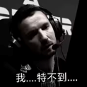

G2-Esport

huNter，本名Nemanja Kovač，出生于1996年1月3日，是G2电子竞技俱乐部的CS职业选手。他是Nikola "NiKo" Kovač的堂哥，两人同姓科瓦奇，因此是堂兄弟关系
huNter的职业生涯始于2015年，当时他加入了iNation战队。随后，他陆续效力于GamePub、Binary Dragons、Valiance和CR4ZY等队伍。2019年，他加入G2电子竞技俱乐部，并在多个顶级赛事中表现出色，包括2023年巴黎Major传奇组、2022年安特卫普Major传奇组、2021年斯德哥尔摩Major亚军和2019年柏林Major传奇组。
huNter在职业生涯中取得了多项重要成就，包括： 2023年巴黎Major传奇组 2022年安特卫普Major传奇组 2021年斯德哥尔摩Major亚军 2019年柏林Major传奇组
在2023年度TOP20选手评选中，huNter排名第13位，成为第五位在28岁以上进入TOP20的选手。他在G2的表现一直稳定，尽管在2021年初的表现有所下滑，但整体上他仍然是G2的重要成员.


